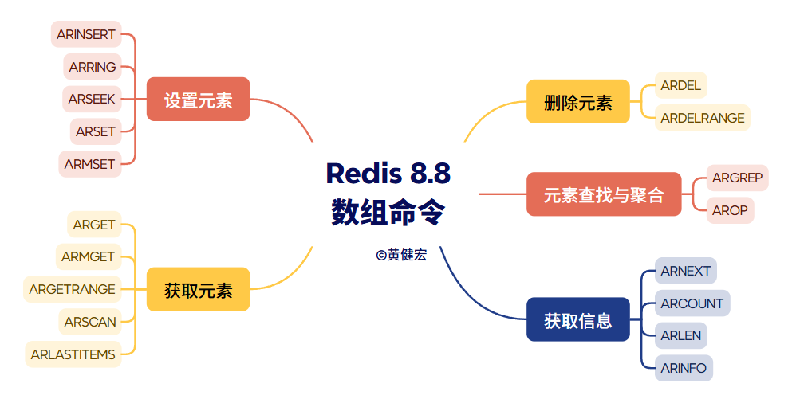

Redis 8.8数组命令详解¶
观看视频
本文有视频版本《Redis 8.8数组命令详解》：https://www.bilibili.com/video/BV1vmVk67Ej1/
最近发布的Redis 8.8新增了数组（Array）数据类型，它的命令可以分为以下几种：

上一个视频《Redis 8.8数组类型简介》已经对这些命令做了快速的基本介绍，而本视频接下来要做的就是对它们做进一步的讲解，包括具体的命令格式、行为及复杂度等等。
设置元素¶
ARINSERT¶
将一个或多个值插入至数组的当前索引之后，命令将返回最后一个被插入值在数组中所处的索引：
ARINSERT key value [value] [...]
[!Note]
Redis数组会把最后被插入值的索引（也即是命令的返回值）记录起来，以便
ARINSERT命令在之后调用的时候，可以继续之前进行的插入工作。
复杂度O(N)，其中N为给定值的数量。
用例：
127.0.0.1:6379> ARINSERT ais "a" "b" "c"
(integer) 2 -- ["a", "b", "c"]
127.0.0.1:6379> ARINSERT ais "d" "e" "f"
(integer) 5 -- ["a", "b", "c", "d", "e", "f"]
ARRING¶
将一个或多个值插入至数组的当前索引之后，并根据给定的大小对数组进行截断和回绕：
ARRING key size value [value] [...]
跟ARINSERT命令一样，ARRING命令也会返回最后一个被插入值的索引，并且数组也会记住该索引。
复杂度为O(N)，其中N为给定的值数量。
用例：
127.0.0.1:6379> ARRING arng 3 "a" "b" "c"
(integer) 2 -- ["a", "b", "c"]
127.0.0.1:6379> ARRING arng 3 "D"
(integer) 0 -- ["D", "b", "c"]
127.0.0.1:6379> ARRING arng 3 "E" "F"
(integer) 2 -- ["D", "E", "F"]
ARNEXT¶
返回ARINSERT/ARRING命令下一次插入将要使用的索引（也即是数组记录的最后一次插入发生的索引加上一）：
ARNEXT key
如果数组为空那么命令将返回0。
复杂度为O(1)。
用例：
127.0.0.1:6379> ARNEXT anxt
(integer) 0
127.0.0.1:6379> ARINSERt anxt "a"
(integer) 0 -- ["a"]
127.0.0.1:6379> ARNEXT anxt
(integer) 1
127.0.0.1:6379> ARINSERT anxt "b" "c" "d"
(integer) 3 -- ["a", "b", "c", "d"]
127.0.0.1:6379> ARNEXT anxt
(integer) 4
ARSEEK¶
为ARINSERT/ARRING命令指定下一次插入将要发生的索引：
ARSEEK key index
命令在设置成功时返回1，返回0则表示数组不存在并且设置失败。
复杂度为O(1)。
用例：
127.0.0.1:6379> ARINSERT ask 0 1
(integer) 1 -- [0, 1]
127.0.0.1:6379> ARNEXT ask
(integer) 2
127.0.0.1:6379> ARSEEK ask 4
(integer) 1
127.0.0.1:6379> ARINSERT ask 4
(integer) 4 -- [0, 1, nil, nil, 4]
ARSET¶
从数组的指定索引开始，连续设置一个或多个值，如果索引上已经有值那么使用新值覆盖旧值：
ARSET key index value [value] [...]
命令将返回设置产生的新元素数量，也即是，有多少个之前没有值的索引被设置了值。
[!Note]
跟
ARINSERT和ARRING命令不一样，ARSET命令不会修改数组的最后插入索引。
复杂度为O(N)，其中N为被设置的索引数量。
用例：
127.0.0.1:6379> ARSET ast 0 "a" "b" "c"
(integer) 3 -- ["a", "b", "c"]
127.0.0.1:6379> ARSET ast 2 "D" "E"
(integer) 1 -- ["a", "b", "D", "E"]
为了证明ARSET不会影响ARINSET的插入，还可以执行以下命令：
127.0.0.1:6379> ARNEXT ast
(integer) 0
127.0.0.1:6379> ARINSERT ast "F"
(integer) 0 -- ["F","b","D","E"]
ARMSET¶
为数组中的一个或多个索引分别设置值：
ARMSET key index value [index value] [...]
命令将返回新设置的索引数量为结果（这些索引之前并没有值）。
复杂度为O(N)，其中N为被设置的索引数量。
用例：
127.0.0.1:6379> ARMSET amst 0 "a" 1 "b"
(integer) 2 -- ["a", "b"]
127.0.0.1:6379> ARMSET amst 4 "c"
(integer) 1 -- ["a", "b", nil, nil, "c"]
获取元素¶
ARGET¶
获取数组指定索引上的值：
ARGET key index
当指定索引上没有值的时候，命令返回空值。
命令的复杂度为O(1)。
用例：
127.0.0.1:6379> ARINSERT ag "a" "b" "c"
(integer) 2
127.0.0.1:6379> ARGET ag 0
"a"
127.0.0.1:6379> ARGET ag 1
"b"
127.0.0.1:6379> ARGET ag 99
(nil)
ARMGET¶
从数组的一个或多个索引中获取值，如果某个给定索引上没有值，那么命令将对其返回空值：
ARMGET key index [index] [...]
命令的复杂度为O(N)，其中N为被给定的索引数量。
用例：
127.0.0.1:6379> ARINSERT amg "a" "b" "c"
(integer) 2
127.0.0.1:6379> ARMGET amg 0 1 2 99
1) "a"
2) "b"
3) "c"
4) (nil)
ARGETRANGE¶
获取数组指定索引范围内的值：
ARGETRANGE key start end
命令将以数组形式返回给定索引范围上的所有值，如果某个索引上的值不存在，那么对其返回空值。
可以通过倒转索引参数（先给定大索引后给定小索引）来逆序地获取元素。
命令的复杂度为O(N)，其中N为给定索引范围的长度（包括空值在内的值数量）。
用例：
127.0.0.1:6379> ARINSERt agr "a" "b" "c" "d" "e"
(integer) 4
127.0.0.1:6379> ARGETRANGE agr 0 4
1) "a"
2) "b"
3) "c"
4) "d"
5) "e"
127.0.0.1:6379> ARGETRANGE agr 4 0
1) "e"
2) "d"
3) "c"
4) "b"
5) "a"
127.0.0.1:6379> ARGETRANGE agr 3 5
1) "d"
2) "e"
3) (nil)
ARSCAN¶
迭代数组的指定索引范围，返回其中实际存在的索引及其元素：
ARSCAN key start end [LIMIT n]
若给定LIMIT可选项，那么命令最多只会返回指定数量的元素。
命令的复杂度为O(N)，其中N为被返回的元素数量。
用例：
127.0.0.1:6379> ARMSET asn 0 "a" 4 "b" 5 "c"
(integer) 3
127.0.0.1:6379> ARGETRANGE asn 0 5
1) "a"
2) (nil)
3) (nil)
4) (nil)
5) "b"
6) "c"
127.0.0.1:6379> ARSCAN asn 0 5
1) 1) (integer) 0
2) "a"
2) 1) (integer) 4
2) "b"
3) 1) (integer) 5
2) "c"
ARLASTITEMS¶
返回数组最近插入的N个元素，若给定REV可选项，那么元素将以逆序返回：
ARLASTITEMS key n [REV]
如果数组为空那么命令将返回一个空数组。
复杂度为O(N)，其中N为命令返回的元素数量。
用例：
127.0.0.1:6379> ARINSERT ali "a" "b" "c"
(integer) 2 -- ["a", "b", "c"]
127.0.0.1:6379> ARLASTITEMS ali 3
1) "a"
2) "b"
3) "c"
127.0.0.1:6379> ARLASTITEMS ali 3 REV
1) "c"
2) "b"
3) "a"
127.0.0.1:6379> ARINSERT ali "d"
(integer) 3 -- ["a", "b", "c", "d"]
127.0.0.1:6379> ARLASTITEMS ali 1
1) "d"
删除元素¶
ARDEL¶
删除数组在指定索引上的值：
ARDEL key index [index] [...]
命令将返回被删除元素的数量。
复杂度为O(N)，其中N为给定索引的数量。
用例：
127.0.0.1:6379> ARINSERT adl "a" "b" "c" "d" "e"
(integer) 4
127.0.0.1:6379> ARGETRANGE adl 0 4
1) "a"
2) "b"
3) "c"
4) "d"
5) "e"
127.0.0.1:6379> ARDEL adl 0 2 3
(integer) 3
127.0.0.1:6379> ARGETRANGE adl 0 4
1) (nil)
2) "b"
3) (nil)
4) (nil)
5) "e"
ARDELRANGE¶
删除数组在一个或多个索引范围内的元素：
ARDELRANGE key start end [start end] [...]
命令将返回被删除元素的数量。
复杂度为O(N)，其中N为被实际删除的非空元素数量。
用例：
127.0.0.1:6379> ARINSERT adr "a" "b" "c" "d" "e"
(integer) 4
127.0.0.1:6379> ARGETRANGE adr 0 4
1) "a"
2) "b"
3) "c"
4) "d"
5) "e"
127.0.0.1:6379> ARDELRANGE adr 0 2
(integer) 3
127.0.0.1:6379> ARGETRANGE adr 0 4
1) (nil)
2) (nil)
3) (nil)
4) "d"
5) "e"
查找&聚合元素¶
ARGREP¶
使用文本谓词在数组的指定索引范围内搜索符合条件的元素，使用特殊索引-和+可以分别代表数组的最小索引和最大索引：
ARGREP key start end
(EXACT str | MATCH str | GLOB pattern | RE pattern) ...
[AND|OR]
[LIMIT n]
[WITHVALUES]
[NOCASE]
命令将以数组形式返回结果，如果没有任何元素匹配则返回空数组。
命令的复杂度为O(N*M)，其中N为搜索过程中实际访问的元素数量，而M则为判断元素是否符合条件所需访问的字节数。
127.0.0.1:6379> ARINSERT words "band" "banana" "ban" "boy" "board"
(integer) 4
127.0.0.1:6379> ARGREP words - + EXACT "ban" WITHVALUES
1) 1) (integer) 2
2) "ban"
127.0.0.1:6379> ARGREP words - + MATCH "ban" WITHVALUES
1) 1) (integer) 0
2) "band"
2) 1) (integer) 1
2) "banana"
3) 1) (integer) 2
2) "ban"
127.0.0.1:6379> ARGREP words - + MATCH "ban" MATCH "na" AND WITHVALUES
1) 1) (integer) 1
2) "banana"
127.0.0.1:6379> ARGREP words - + MATCH "ban" MATCH "na" OR WITHVALUES
1) 1) (integer) 0
2) "band"
2) 1) (integer) 1
2) "banana"
3) 1) (integer) 2
2) "ban"
127.0.0.1:6379> ARGREP words - + GLOB "b[ao]?" WITHVALUES
1) 1) (integer) 2
2) "ban"
2) 1) (integer) 3
2) "boy
AROP¶
对数组指定索引范围内的元素进行聚合计算：
AROP key start end SUM|MIN|MAX|AND|OR|XOR|MATCH value|USED
命令的返回值将随着执行的计算不同而不同，结果可能是字符串也可能是数字值，又或者是数组；当数组中没有元素可供执行指定的操作时，命令将返回空值（比如尝试对字符串数组执行SUM）。
命令的复杂度为O(N*M)，其中N为计算涉及的实际元素数量，而M则为对每个元素进行聚合计算的复杂度。
用例：
127.0.0.1:6379> ARINSERT aop 0 1 2 3 4
(integer) 4
127.0.0.1:6379> AROP aop 0 4 SUM
"10"
127.0.0.1:6379> AROP aop 0 4 MIN
"0"
127.0.0.1:6379> AROP aop 0 4 MAX
"4"
127.0.0.1:6379> AROP aop 0 4 MATCH 511500
(integer) 0
127.0.0.1:6379> AROP aop 0 4 MATCH 2
(integer) 1
127.0.0.1:6379> AROP aop 0 4 USED
(integer) 5
获取信息¶
ARCOUNT¶
获取数组中非空元素的数量，如果数组为空则返回0：
ARCOUNT key
复杂度为O(1)。
用例：
127.0.0.1:6379> ARMSET ac 0 "a" 1 "b" 99 "c"
(integer) 3
127.0.0.1:6379> ARCOUNT ac
(integer) 3
ARLEN¶
返回数组的长度（数组当前的最大索引加一），如果数组为空则返回0：
ARLEN key
复杂度为O(1)。
用例：
127.0.0.1:6379> ARMSET al 0 "a" 1 "b" 99 "c"
(integer) 3
127.0.0.1:6379> ARLEN al
(integer) 100
ARINFO¶
获取数组的元数据，给定FULL选项可以获得更详尽的数据：
ARINFO key [FULL]
不使用FULL选项时命令的复杂度为O(1)，使用FULL选项时复杂度为O(N)，其中N为数组切片（slice）的数量。
用例：
127.0.0.1:6379> ARINFO a
1) "count"
2) (integer) 5
3) "len"
4) (integer) 5
5) "next-insert-index"
6) (integer) 5
7) "slices"
8) (integer) 1
9) "directory-size"
10) (integer) 1
11) "super-dir-entries"
12) (integer) 0
13) "slice-size"
14) (integer) 4096
127.0.0.1:6379> ARINFO a FULL
1) "count"
2) (integer) 5
3) "len"
4) (integer) 5
5) "next-insert-index"
6) (integer) 5
7) "slices"
8) (integer) 1
9) "directory-size"
10) (integer) 1
11) "super-dir-entries"
12) (integer) 0
13) "slice-size"
14) (integer) 4096
15) "dense-slices" -- 具体的切片信息
16) (integer) 0
17) "sparse-slices"
18) (integer) 1
19) "avg-dense-size"
20) "0"
21) "avg-dense-fill"
22) "0"
23) "avg-sparse-size"
24) "8"
结语¶
好的，关于Redis数组命令的详细介绍到这里就结束，欢迎大家在Bilibili上关注我，观看更多Redis相关视频。
谢谢~！